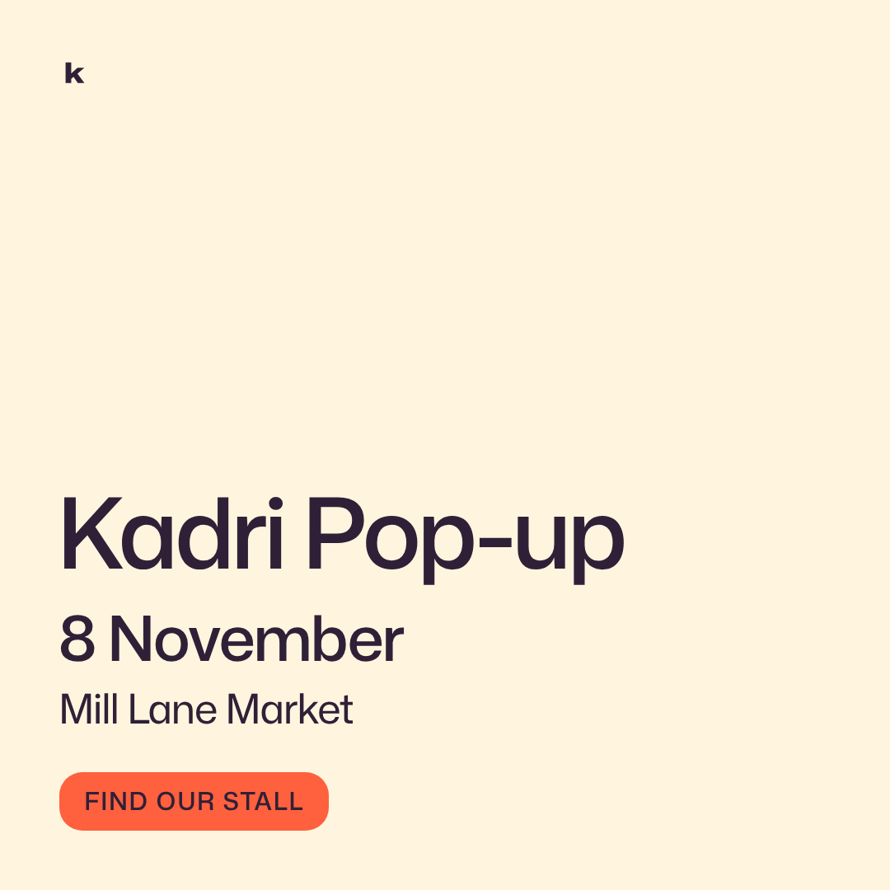
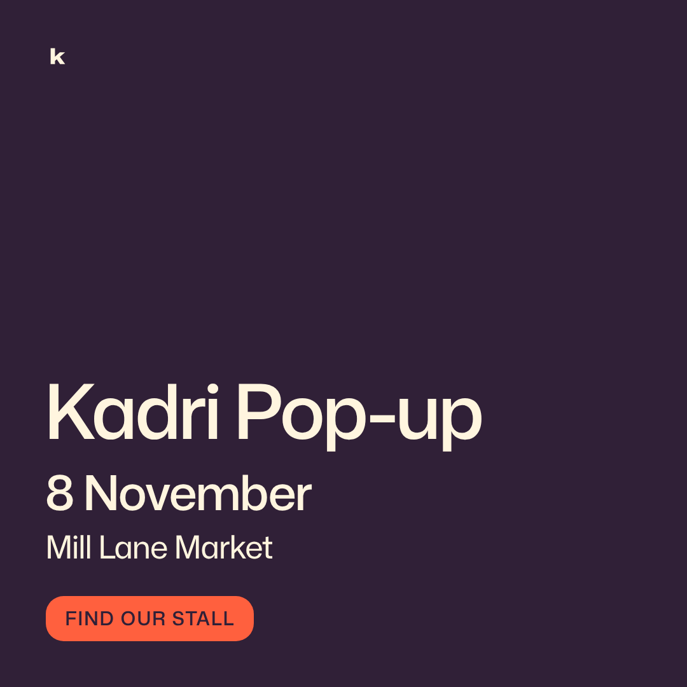
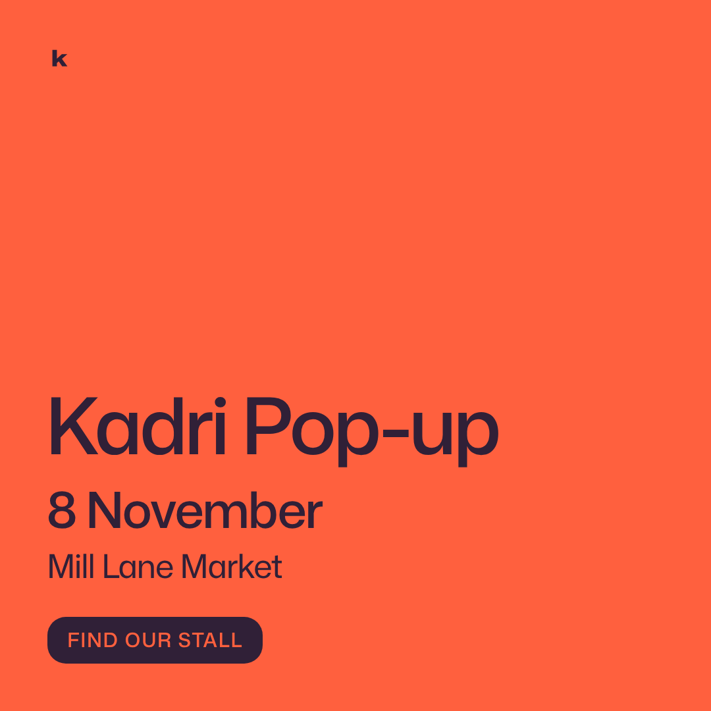
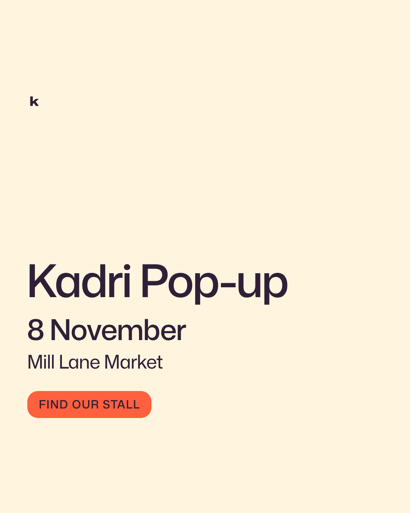
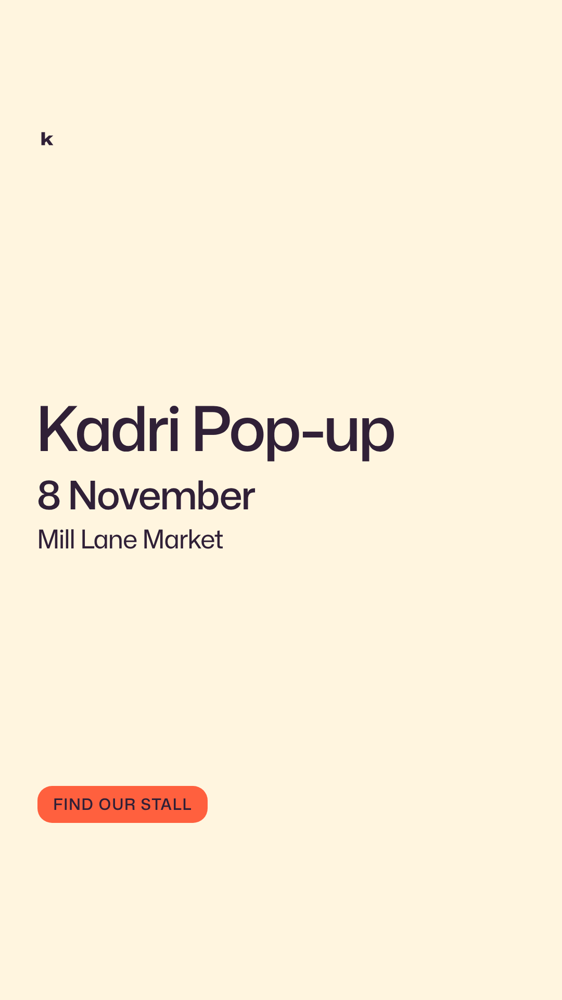

Run p01: the Kadri pop-up, event layout (proposal)
The message: name = "Kadri Pop-up" · date = "8 November" · place = "Mill Lane Market" (messages/kadri-popup.json). Every card measured all twelve checks (eleven from the schema plus facts-consistent); the numbers are in report.md. Pick one: approving it locks the values each card lists. Kadri Coffee is fictional teaching material by Madhuri Maram.
The two-second question, for every card: what do you read first? It should be the name.

event--1x1--paper · feed post, the message
your call every check passed; the cta "Find our stall" is a draft that needs your yes; locks accent-ink, muted, both trackings, radius
event--1x1--ink · feed post, the message
your call every check passed; cream k (reversed logo) on the ink surface, a guess until picked; cta draft
event--1x1--accent · feed post, the message
your call every check passed; dark k on coral at 5.04:1; cta draft
event--4x5--paper · tall feed post, the message with more room
your call every check passed; cta draft
event--9x16--paper · story, one fact plus a call to action
your call every check passed; the block sits on the centre line, the cta at the foot of the safe zone (250 top, 340 bottom: an estimate); cta draft